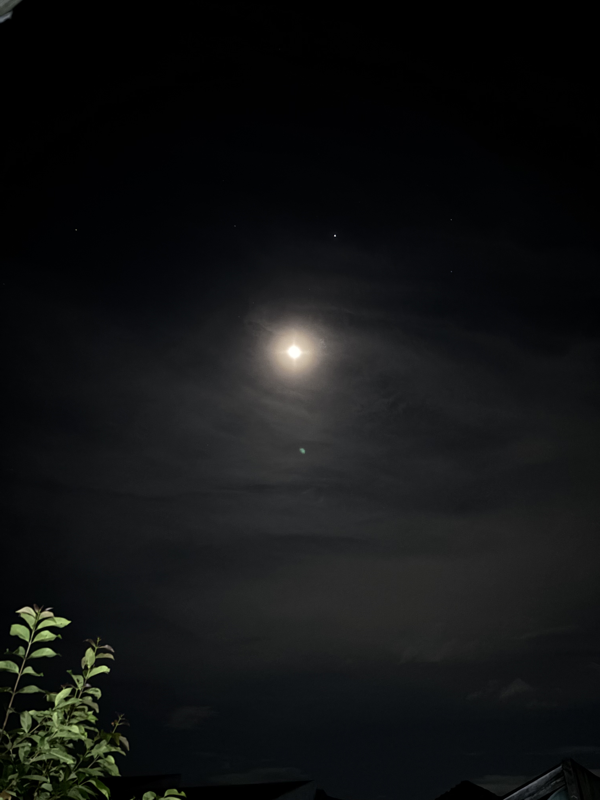
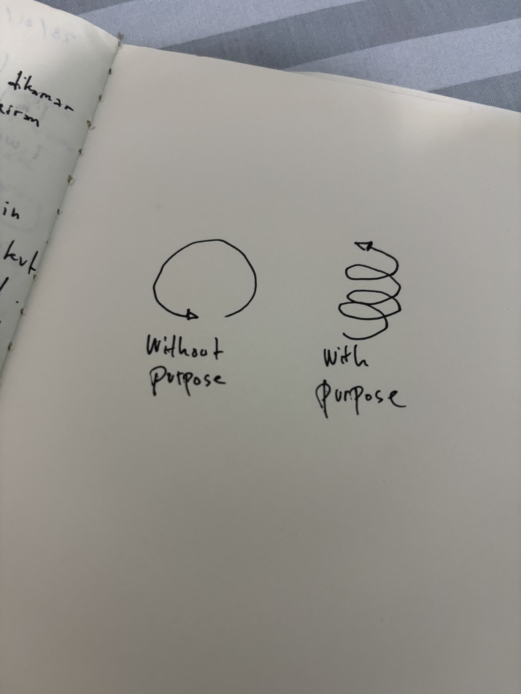

dear terimakaashi,
malem ini langitnya bagus lagii :) 😁

hari ini aku belajar sedikit hal sama pak tyo 🤔 aku nanya "pak emangnya gimana sih jadi cowo yang punya tujuan?" abis itu reaksi ruangan pak tyo yang isinya ada bu ayu juga kaget sambil bilang "oke saya keluar aja 😂"
aku nanya ini sebenarnya ke trigger juga sih dari tontonan kemarin podcast escape waktu ustadz felix jelasin konteks tentang kenapa kita bisa sibuk menerima misinformasi, itu terjadi karena kita menjauh dari apa yang menjadi tujuan kita, kena distraksi, jadi beliau bilang solusinya yaa punya tujuan biar kegiatannya kita itu mengarah kepada apa yang kita sudah rencanakan 🤔
dan yaa bukan karena abis nonton ini aja sih aku jadi kepikiran tentang hal ini, aku jadinya nanya pak tyo aja karena merasa lebih baik ngobrol sama orang wkwkw, sebenernya aku juga sudah tau tentang hal itu dan mengusahakan terkait membuat tujuan dalam hidup semacam itu lah 😬
aku mempertanyakan hal ini dalam pikiranku juga karena aku nanya lagi sama diri sendiri emang apa tujuannya aku? mencari ridho Allah? kembali ke Allah? tapi kegiatan yang aku lakuin sekarang apakah sudah mengarah kesana? bahkan aku aja sekarang masih ngerasain menurunnya semangat aku dalam ibadah ramadhan 🤔🙂↕️
karena kepikiran terus jadi memustuskan untuk nanya sama 'mentor' aku yaitu pak tyo wkwkwk 👴🏻 terus pak tyo ngasih gambar yang kurang lebih kayak gini:

pak tyo juga mau jemput afa dan sekalian pulang kan jadinya gak bisa panjang ngobrolnya dan beliau singkatnya ngasih gambar doang yang kayak gitu 🙆🏻♂️ dan aku langsung ngerti, mungkin juga dengan pemahaman aku saja ketika liat gambar itu sih 🙂↕️
kita selamanya akan bingung, belum tentu akan selalu siap juga dengan ujian apa yang Allah kasih atau situasi apapun yang kita sedang hadapi, tapi dari gambar itu resahnya aku cukup terjawab, karena yang membedakan "having a purpose" dan tidak itu setidaknya walaupun kita bingung, kita tetap melangkah maju ketimbang gak punya tujuan sama sekali, karena hal itu akan membuat kita ada di tempat atau situasi yang sama terus menerus ketimbang kita punya tujuan🤔😬 tujuan yang kita buat saat ini pasti juga banyak gak yakinnya atau juga banyak ambil detour duluan ketimbang langsung nyampe 🚏 at least itu yang aku pahami sih, cukup menjawab dan ini jadi salah satu hal yang aku pelajari hari ini 🙂↕️
terima kasih sudahh mau ngomong sama aku hari ini, aku senang bisa ketemu kamu dan bisa berinteraksi 😊 i hope you are doing well, kalaupun ngga juga it's okayyy, take your time, take care yaaa :)
terima kasiiihh 🙆🏻♂️
dari mochamad thiesa nabil